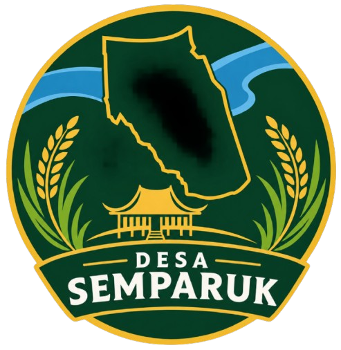
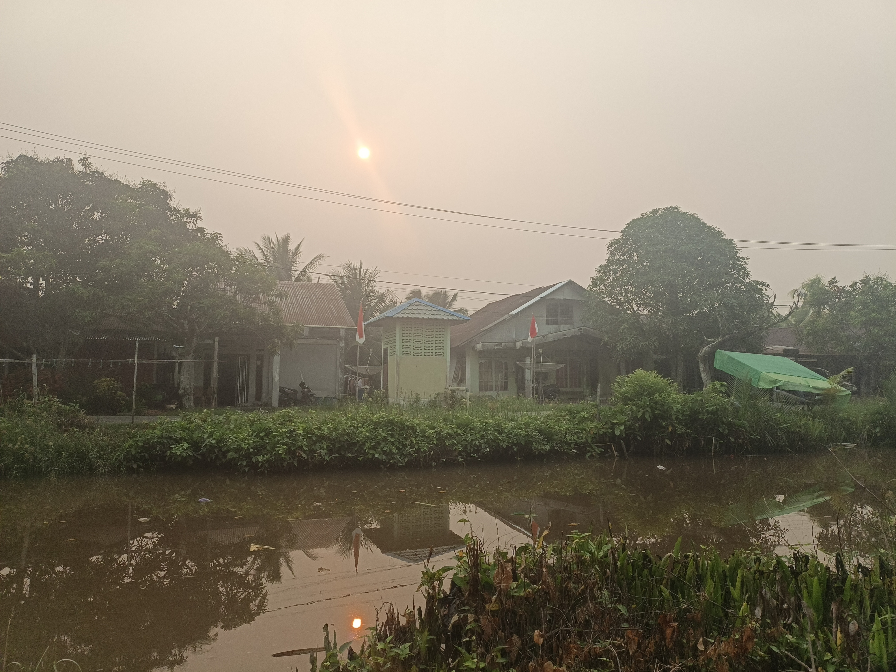
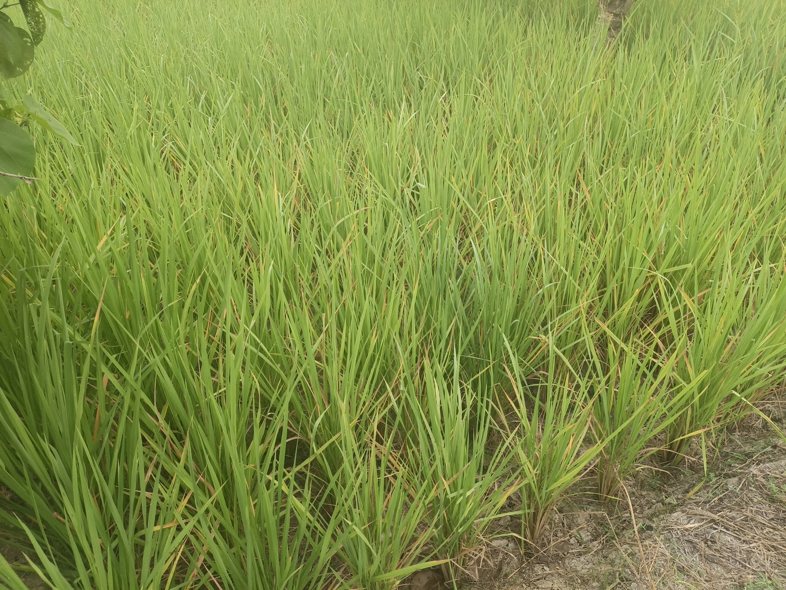
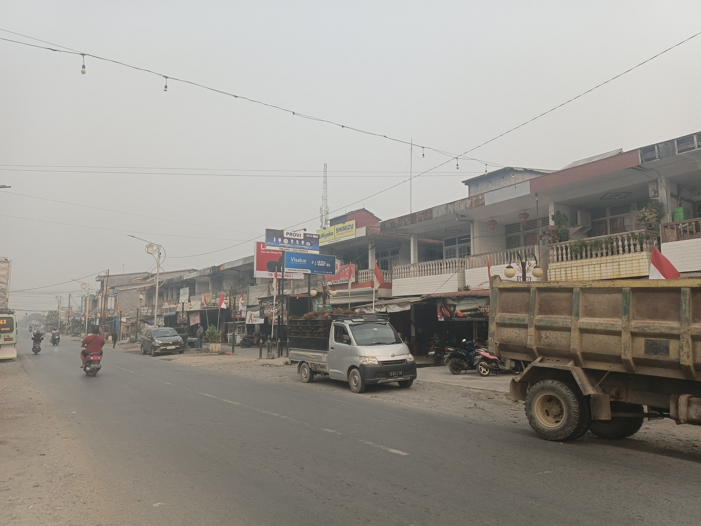

Desa SemparukKecamatan Semparuk, Kabupaten Sambas, Kalimantan Barat
Jelajahi Lebih LanjutLuas Wilayah
Wilayah Administrasi
Komoditas Unggulan
Masyarakat Agraris
Desa Semparuk terletak di Kecamatan Semparuk, Kabupaten Sambas, Provinsi Kalimantan Barat. Dengan luas wilayah 13,00 km², desa ini memiliki potensi pertanian dan perkebunan yang menjadi komoditas unggulan.
Baca Selengkapnya

